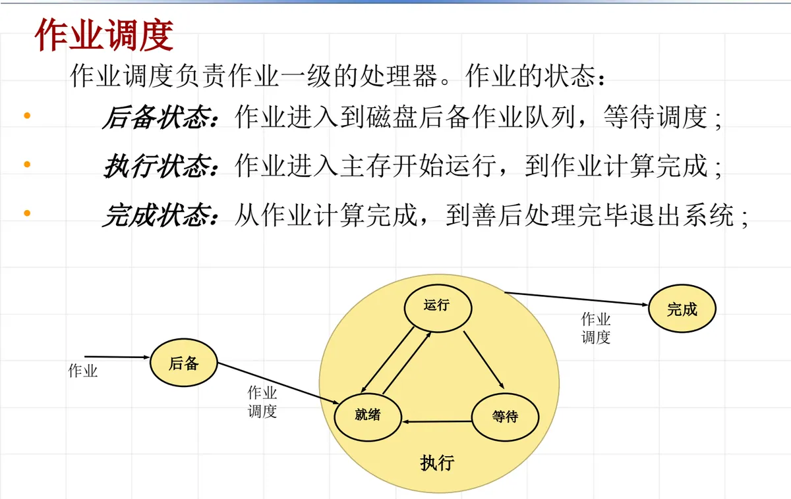

操作系统原理 · 第 6 章 处理机调度
6.2 作业调度
6.1 节把处理机调度分成宏观与微观两层，这一节讲宏观的那一层——作业调度。它管的是「哪些作业有资格进入系统」，所以先要看清一个作业从提交到退出会经历哪些状态，再看作业调度程序为此必须完成哪四件事，最后交代它的数据结构：作业控制块 JCB。
1. 作业的状态及其变迁
作业调度负责作业一级的处理器。要理解它做什么，先要看一个作业在系统里的处境会怎样变化。作业有三种状态：
- 后备状态：作业进入到磁盘后备作业队列，等待调度；
- 执行状态：作业进入主存开始运行，到作业计算完成；
- 完成状态：从作业计算完成，到善后处理完毕退出系统。
这三个状态串起来就是一个作业的完整生命周期。用户提交的作业先被放进磁盘上的后备作业队列：它虽然已经到了系统里，却还不能运行，因为主存、外部设备等资源未必腾得出来，只能排队等待。作业调度的作用就发生在这一站——从后备队列里挑出作业，为它分配资源、建立对应的进程，把它送进主存。作业一旦进入主存开始运行，就从后备状态转入执行状态。计算完成后作业还没有真正离开系统：系统要输出执行信息、回收它占用的资源，这一段收尾工作做完，作业才进入完成状态退出系统。

对照这张图还能看清一件事：执行状态这一段里其实含着「就绪等待」和「执行」两个环节。作业进了主存并不等于马上就能占用处理机，它还要等进程调度把处理机分给它——这正是 6.1 节所说的宏观调度与微观调度的分工：作业调度决定作业进不进得来，进程调度决定已经进来的进程谁先运行。所以作业调度只需把作业送到「可以运行」的位置，剩下的竞争处理机的事交给下一层。
2. 作业调度的功能
作业调度的主要任务是完成作业从后备状态到执行状态、以及从执行状态到完成状态的转变。为了完成这个任务，作业调度程序应包括以下四项功能：
- （1）确定数据结构：为每一个进入系统的作业分配作业控制块 JCB（Job Control Block）；
- （2）确定调度算法：按照一定的调度策略从磁盘后备队列中挑选一个或多个作业投入运行；
- （3）分配资源：为作业创建相应的进程，并为这些进程提供所需资源；
- （4）善后处理：输出执行信息，回收资源，撤销全部进程和作业控制块。
这四项功能恰好对应作业状态的三次变化：第（1）项是作业进入系统时的准备，先把描述这个作业的数据结构立起来；第（2）（3）项合起来把作业从后备状态推进到执行状态——先挑中它，再给它资源、建好进程；第（4）项则把作业从执行状态送到完成状态，连同它的进程和作业控制块一起撤销，系统才算把这个作业彻底了结。
从这四项功能还能看出作业调度的双重身份：它一方面要「挑选」，是调度者；另一方面要负责资源的分配与回收，又是资源管理者。这也是为什么它被称为宏观调度——它处理的是整个系统里一批作业的进出，动作的粒度比进程调度粗得多。
3. 作业控制块 JCB
作业控制块 JCB（Job Control Block）是作业调度赖以工作的数据结构：作业进入系统时创建，退出系统时销毁，JCB 是一个作业存在的标志。换句话说，系统里有多少个 JCB，就有多少个作业在系统中；作业被撤销时 JCB 一并销毁，作业的痕迹才完全消失。
JCB 记录该作业的相关信息，主要包括：作业名、作业类型、作业状态、优先级、资源需求情况、进入系统时间、估计执行时间等。这些字段各有各的用途：作业名、作业类型标识它是什么；作业状态对应上面说的后备、执行、完成三种状态；优先级、资源需求情况是调度算法挑选作业时的依据；进入系统时间和估计执行时间则用来衡量它等了多久、还要运行多久——6.3 节的周转时间、带权周转时间等指标，正是拿这些字段算出来的。
把 JCB 与第 4 章 4.2 节的进程控制块 PCB（Process Control Block）放在一起看，两者的地位是对应的：JCB 描述一个作业，PCB 描述一个进程，而作业在执行状态下会对应一个或多个进程，于是 JCB 与 PCB 之间也就有了对应关系——第（4）项功能里「撤销全部进程和作业控制块」说的正是这种连带关系。
本节小结
- 作业调度负责作业一级的处理器，是宏观调度：它决定哪些作业有资格进入系统，与 6.1 节所说的微观调度（进程调度）分工配合；
- 作业有三种状态：后备状态（在磁盘后备作业队列中等待调度）、执行状态（进入主存开始运行，到计算完成）、完成状态（计算完成后做善后处理直到退出系统）；
- 执行状态里含「就绪等待」与「执行」两个环节：作业进入主存后仍要等进程调度分配处理机，作业调度只负责把它送到可以运行的位置；
- 作业调度的主要任务是完成作业在后备、执行、完成三个状态之间的转变，为此要有四项功能：确定数据结构（分配 JCB）、确定调度算法（从后备队列挑选作业）、分配资源（创建进程并提供资源）、善后处理（输出信息、回收资源、撤销全部进程和 JCB）；
- 作业控制块 JCB 是作业存在的标志，在作业进入系统时创建、退出系统时销毁，记录作业名、作业类型、作业状态、优先级、资源需求情况、进入系统时间、估计执行时间等信息；它的地位与描述进程的 PCB 相对应，下一节 6.3 节的周转时间与带权周转时间正是靠 JCB 中的进入系统时间、估计执行时间等字段算出来的。